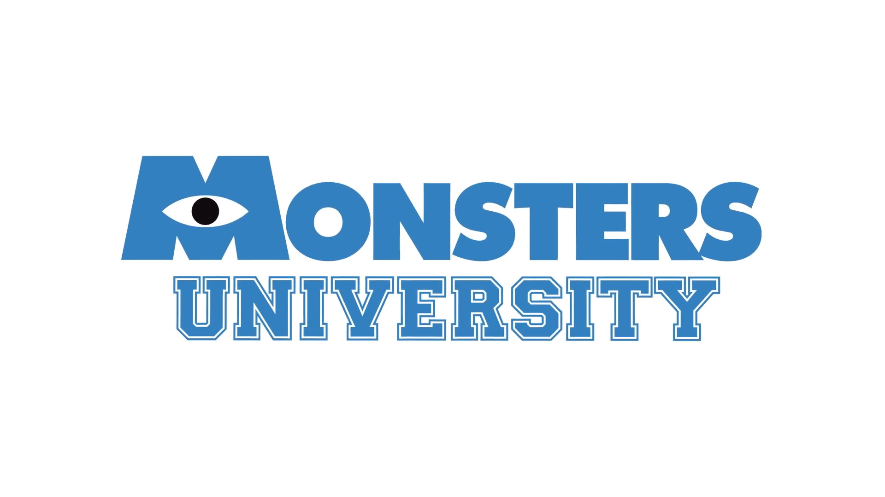

Mi Vida Universitaria
Publicado por Arturo | Periodo: Septiembre – Diciembre 2026
Lo que "hago" en la uni

Voy en el 4° cuatrimestre, grupo C de Desarrollo de Software Multiplataforma en la UTHH. La carrera me ha tenido ocupado, pero también me ha dado varios proyectos que "disfruto" hacer.
Hasta ahora llevo un promedio de 9.2 (milagrosamente). No siempre es fácil mantenerlo, sobre todo cuando se juntan las entregas, pero ahí vamos (a quedarnos 4 horas más en la biblioteca a trabajar, nos negrean Aiudaaaa).
Así va mi promedio por ahora:
Proyectos en Ejecución (aun no los hago)
- MedicDate: Una aplicacion web, continuidad del proyecto integrador del sementre pasado, el cual ya nos dio una arrastrisa (2da parte??? ahhhhh).
- Patrones Móviles en Android Studio: Implementación y análisis comparativo de arquitecturas MVC, MVP y MVVM en Kotlin y Java (aplicaciones con arquitecturas que apenas voy a aprender XD).
- Estructuras de Datos: Simplemente JAVA XD, no me acuerdo de nada de JAVA pero ahi voy yo a jugarle al ingeniero.
Horario de Clases (Periodo Septiembre - Diciembre 2026) (Milagrosamente es bueno)
| Hora (del negreo) | Lunes | (Ma)Martes | Miércoles | Jueve(Be)s | (Be)Viernes |
|---|---|---|---|---|---|
| 07:00 - 07:50 | Inglés IV (Salón K8) | Cálculo de varias Variables (Salón K9) | Inglés IV (Salón K8) | Estructura de Datos (Lab 1) | Inglés IV (Salón K8) |
| 07:50 - 08:40 | Inglés IV (Salón K8) | Cálculo de varias Variables (Salón K9) | Análisis y Diseño de Software (Salón K9) | Estructura de Datos (Lab 1) | Inglés IV (Salón K8) |
| 08:40 - 09:30 | Aplicaciones Web (Lab 3) | Estructura de Datos (Lab 4) | Cálculo de varias Variables (Salón K9) | Estructura de Datos (Lab 1) | Cálculo de varias Variables (Salón K9) |
| 09:30 - 10:20 | Aplicaciones Web (Lab 3) | Estructura de Datos (Lab 4) | Cálculo de varias Variables (Salón K9) | Aplicaciones Web (Lab 4) | Análisis y Diseño de Software (Salón K9) |
| (Donde se supone que debe ir el )R E C E S O (10:20 - 10:50) (milagor y tenemos) | |||||
| 10:50 - 11:40 | Ética Profesional (Salón K12) | Desarrollo de Apps Móviles (Lab 4) | Desarrollo de Apps Móviles (Lab 4) | Aplicaciones Web (Lab 4) | Análisis y Diseño de Software (Salón K9) |
| 11:40 - 12:30 | Ética Profesional (Salón K12) | Desarrollo de Apps Móviles (Lab 4) | Desarrollo de Apps Móviles (Lab 4) | Análisis y Diseño de Software (Salón K9) | Desarrollo de Apps Móviles (Lab 3) |
| 12:30 - 13:20 | Tutorías (Salón K12) | Asesoría Cálculo (Salón K11) | Aplicaciones Web (Lab 4) | Análisis y Diseño de Software (Salón K9) | Desarrollo de Apps Móviles (Lab 3) |
| 13:20 - 14:10 | — | — | Asesoría Apps Móviles (Lab 2) | Asesoría Estructura de Datos (Lab 3) | Asesoría Análisis y Diseño (Salón K9) |
| 14:10 - 15:00 | — | Asesoría Inglés IV (Salón K8) | Asesoría Ética Profesional (Salón K7) | Asesoría Aplicaciones Web (Salón K7) | — |
| Carga (del negreo) Total Semanal | 36 Horas | ||||
Plantilla de Docentes del Periodo
- Desarrollo de Aplicaciones Móviles (6 hrs): Ing. Gadiel Ramos Hernández
- Inglés IV (5 hrs): Lic. Norma Hernández Gámez
- Cálculo de varias Variables (5 hrs): Ing. Julio Cesar Morales Hernández
- Aplicaciones Web (5 hrs): Mtro. Carlos Andrés Rodríguez Arguelles
- Estructura de Datos (5 hrs): Mtro. Luis Alberto Mendoza San Juan
- Análisis y Diseño de Software (5 hrs): Mtro. Juvencio Mendoza Castelán
- Ética Profesional (4 hrs): Lic. Beatriz Hernández Hernández
- Tutorías (1 hr): Mtro. Carlos Andrés Rodríguez Arguelles